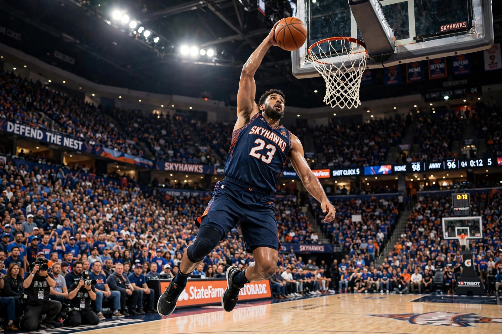

From Wikipedia, the free encyclopedia
| Basketball | |
|---|---|
 A basketball player leaping to dunk the ball through the hoop in an arena | |
| Highest governing body | FIBA |
| First played | 21 December 1891, Springfield, Massachusetts, US |
| Team members | 5 per side on court |
| Type | Team sport, ball sport |
| Venue | Indoor court (hardwood) |
| Olympic | 1936 (men), 1976 (women) |
Basketball is a team sport in which two teams, most commonly of five players each, oppose one another on a rectangular court, competing to shoot a basketball through the defender's hoop — an 18-inch (46 cm) diameter basket mounted 10 feet (3.048 m) high to a backboard at each end of the court — while preventing the opposing team from shooting through their own hoop.
The game was invented in December 1891 by Canadian physical education instructor James Naismith in Springfield, Massachusetts, as a less injury-prone sport than football; the first game used a soccer ball and two peach baskets. It spread worldwide through the YMCA and is now one of the world's most popular and widely viewed sports, governed internationally by FIBA (founded 1932).
The premier professional league is the National Basketball Association (NBA) in North America, founded in 1946. Its most famous players include Michael Jordan, widely regarded as the greatest of all time after leading the Chicago Bulls to six championships in the 1990s; LeBron James, the NBA's all-time leading scorer; Kareem Abdul-Jabbar; Magic Johnson; Larry Bird; and Kobe Bryant. The United States men's team has dominated Olympic basketball, though international competition — led by European and South American leagues and the FIBA Basketball World Cup — has grown steadily stronger.
The Women's National Basketball Association (WNBA), founded in 1996, is the leading women's league; the US women's national team is the most successful in international competition.
Categories: Basketball | Team sports | Ball games | Sports originating in the United States